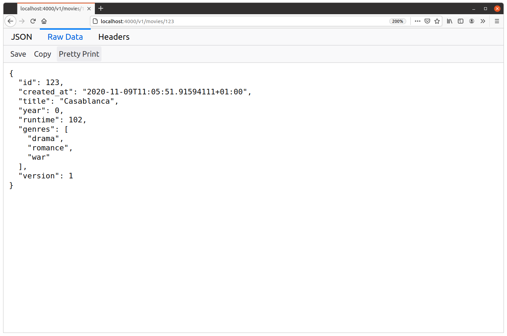
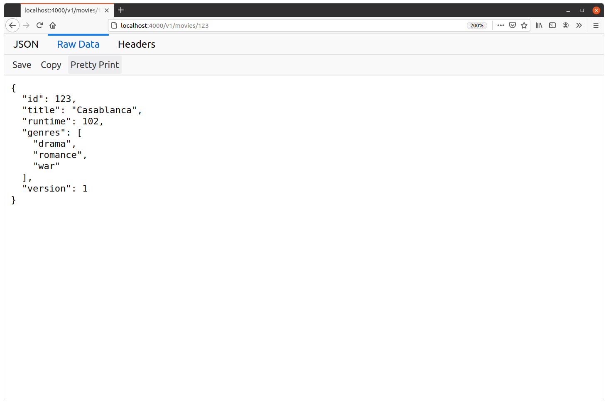

کدگذاری structها
در این فصل دوباره سراغ متد showMovieHandler که قبلا ساختیم میرویم و آن را بهروزرسانی میکنیم تا یک پاسخ JSON برگرداند که نماینده یک فیلم در سیستم ماست. چیزی شبیه این:
{
"id": 123,
"title": "Casablanca",
"runtime": 102,
"genres": [
"drama",
"romance",
"war"
],
"version": 1
}
این بار به جای encode کردن یک map برای ساخت این JSON object، کاری که در فصل قبل انجام دادیم، یک struct سفارشی به نام Movie را encode میکنیم.
پس اول از همه باید با تعریف یک struct سفارشی به نام Movie شروع کنیم. این کار را داخل یک پکیج جدید به نام internal/data انجام میدهیم؛ پکیجی که بعدا بزرگتر میشود و همه typeهای داده سفارشی پروژه ما را همراه با منطق تعامل با database در خودش نگه میدارد.
اگر همراه کتاب جلو میروید، یک directory جدید به نام internal/data بسازید که یک فایل movies.go داخلش داشته باشد:
$ mkdir internal/data $ touch internal/data/movies.go
و در این فایل جدید، struct سفارشی Movie را به این شکل تعریف میکنیم:
package data import ( "time" ) type Movie struct { ID int64 // Unique integer ID for the movie CreatedAt time.Time // Timestamp for when the movie is added to our database Title string // Movie title Year int32 // Movie release year Runtime int32 // Movie runtime (in minutes) Genres []string // Slice of genres for the movie (romance, comedy, etc.) Version int32 // The version number starts at 1 and will be incremented each // time the movie information is updated }
حالا که این کار انجام شد، showMovieHandler را بهروزرسانی میکنیم تا یک instance از struct مربوط به Movie با مقداری داده ساختگی بسازد و بعد با استفاده از helper مربوط به writeJSON() آن را به عنوان پاسخ JSON ارسال کند.
در عمل کار نسبتا ساده است:
package main import ( "fmt" "net/http" "time" // New import "greenlight.alexedwards.net/internal/data" // New import ) ... func (app *application) showMovieHandler(w http.ResponseWriter, r *http.Request) { id, err := app.readIDParam(r) if err != nil { http.NotFound(w, r) return } // Create a new instance of the Movie struct, containing the ID we extracted from // the URL and some dummy data. Also notice that we deliberately haven't set a // value for the Year field. movie := data.Movie{ ID: id, CreatedAt: time.Now(), Title: "Casablanca", Runtime: 102, Genres: []string{"drama", "romance", "war"}, Version: 1, } // Encode the struct to JSON and send it as the HTTP response. err = app.writeJSON(w, http.StatusOK, movie, nil) if err != nil { app.logger.Error(err.Error()) http.Error(w, "The server encountered a problem and could not process your request", http.StatusInternalServerError) } }
خب، بیایید امتحانش کنیم!
API را دوباره راهاندازی کنید و بعد در مرورگر به localhost:4000/v1/movies/123 بروید. باید یک پاسخ JSON شبیه این ببینید:
چند نکته جالب در این پاسخ وجود دارد که باید به آنها اشاره کنیم:
struct مربوط به
Movieبه یک JSON object واحد encode شده و نام fieldها و مقدارهایشان به صورت جفتهای key-value آمدهاند.به صورت پیشفرض، keyهای داخل JSON object برابر با نام fieldها در struct هستند؛ مثل
ID،CreatedAt،Titleو موارد مشابه. کمی بعد درباره سفارشیسازی آنها صحبت میکنیم.اگر برای یک field از struct مقدار صریحی تنظیم نشده باشد، encoding مربوط به zero value آن field در خروجی JSON ظاهر میشود. نمونهاش را در پاسخ بالا میبینیم؛ در کد Go برای field مربوط به
Yearمقداری تنظیم نکردیم، اما همچنان در خروجی JSON با مقدار0ظاهر شده است.
تغییر keyها در JSON object
یکی از چیزهای خوب درباره encode کردن structها در Go این است که میتوانید با annotate کردن fieldها با struct tagها، JSON را سفارشی کنید.
احتمالا رایجترین استفاده از struct tagها تغییر نام keyهایی است که در JSON object ظاهر میشوند. این زمانی مفید است که نام fieldهای struct شما برای پاسخهای public-facing مناسب نیست، یا میخواهید در خروجی JSON از یک سبک casing متفاوت استفاده کنید.
برای نشان دادن روش انجام این کار، struct مربوط به Movies را با struct tagها annotate میکنیم تا برای keyها از snake_case استفاده کند. به این شکل:
package data ... // Annotate the Movie struct with struct tags to control how the keys appear in the // JSON-encoded output. type Movie struct { ID int64 `json:"id"` CreatedAt time.Time `json:"created_at"` Title string `json:"title"` Year int32 `json:"year"` Runtime int32 `json:"runtime"` Genres []string `json:"genres"` Version int32 `json:"version"` }
و اگر server را دوباره راهاندازی کنید و دوباره به localhost:4000/v1/movies/123 بروید، حالا باید پاسخی با keyهای snake_case شبیه این ببینید:

مخفی کردن fieldهای struct در JSON object
همچنین میتوان با استفاده از directiveهای struct tag یعنی omitzero و -، قابل مشاهده بودن fieldهای جداگانه struct را در JSON کنترل کرد.
directive مربوط به - یا hyphen زمانی استفاده میشود که هرگز نمیخواهید یک field مشخص از struct در خروجی JSON ظاهر شود. این برای fieldهایی مفید است که شامل اطلاعات داخلی سیستم هستند و به کاربران شما مربوط نمیشوند، یا شامل اطلاعات حساسی هستند که نمیخواهید افشا کنید، مثل hash یک password.
در مقابل، directive مربوط به omitzero یک field را در خروجی JSON مخفی میکند اگر و فقط اگر مقدار آن برابر با zero value type همان field باشد. برای یادآوری، zero valueهای typeهای Go که میتوانند به JSON encode شوند اینها هستند:
| Zero value | نوع Go |
|---|---|
false |
bool |
"" |
string |
0 |
int*, uint*, float*, rune |
nil |
slices, maps, pointers |
| هر field داخل struct مقدار zero value خودش را دارد | structs |
| هر element داخل array روی zero value مربوط به type خودش تنظیم میشود | arrays |
برای نشان دادن نحوه استفاده از این directiveها، چند تغییر دیگر در struct مربوط به Movie ایجاد میکنیم. field مربوط به CreatedAt به کاربران نهایی ما ربطی ندارد، پس با استفاده از directive مربوط به - همیشه آن را در خروجی مخفی میکنیم. همچنین از directive مربوط به omitzero استفاده میکنیم تا fieldهای Year، Runtime و Genres را در خروجی مخفی کنیم، اگر و فقط اگر مقدارشان برابر با zero value مربوط به type خودشان باشد.
حالا struct tagها را به این شکل بهروزرسانی کنید:
package data ... type Movie struct { ID int64 `json:"id"` CreatedAt time.Time `json:"-"` // Use the - directive Title string `json:"title"` Year int32 `json:"year,omitzero"` // Add the omitzero directive Runtime int32 `json:"runtime,omitzero"` // Add the omitzero directive Genres []string `json:"genres,omitzero"` // Add the omitzero directive Version int32 `json:"version"` }
حالا وقتی application را دوباره راهاندازی کنید و مرورگر را refresh کنید، باید پاسخی ببینید که دقیقا شبیه این است:

اینجا میبینیم که field مربوط به CreatedAt دیگر اصلا در JSON ظاهر نمیشود و field مربوط به Year هم که مقدار 0 داشت، به لطف directive مربوط به omitzero ظاهر نشده است. fieldهای دیگری که روی آنها از omitzero استفاده کردیم، یعنی Runtime و Genres، تحت تاثیر قرار نگرفتهاند.
اطلاعات تکمیلی
directive مربوط به omitempty
directive مربوط به omitzero که در این فصل استفاده کردیم، در Go 1.24 اضافه شده و از نظر رفتار، همپوشانی قابل توجهی با directive قدیمیتری به نام omitempty دارد.
directive مربوط به omitzero درباره کاری که انجام میدهد بسیار روشن و سازگار است: وقتی مقدار دقیقا با zero value آن type برابر باشد، آن چیز را از JSON حذف میکند. و این تنها کاری است که انجام میدهد.
در مقابل، directive مربوط به omitempty شبیه omitzero است، اما رفتارش کمتر سازگار است. این directive از چند جهت مهم با omitzero فرق دارد:
omitemptystructها را حذف نمیکند، حتی اگر همه fieldهای struct مقدار zero value داشته باشند.omitemptytypeهایtime.Timeرا حذف نمیکند، حتی اگر zero value داشته باشند. دلیلش این است که type مربوط بهtime.Timeپشت صحنه در واقع یک struct است، پس این مورد در اصل حالت خاصی از نکته قبلی است.omitemptyarrayها را حذف نمیکند، حتی اگر zero value داشته باشند.omitemptysliceها و mapهای خالی را حذف میکند، یعنی sliceها و mapهایی که initialize شدهاند اما length آنها صفر است؛ و همچنین sliceها و mapهایnilرا هم حذف میکند.
حالا که omitzero وجود دارد، تنها زمانی که معمولا استفاده از directive مربوط به omitempty را پیشنهاد میکنم وقتی است که میخواهید sliceها یا mapهای خالی را کاملا از JSON حذف کنید، به جای اینکه به یک JSON array خالی مثل [] encode شوند.
برای مثال، اگر بخواهید هر وقت field مربوط به Genres هیچ مقداری ندارد، یا nil است، آن را کاملا از JSON حذف کنید، میتوانید از directive مربوط به omitempty به این شکل استفاده کنید:
type Movie struct { ID int64 `json:"id"` CreatedAt time.Time `json:"-"` Title string `json:"title"` Year int32 `json:"year,omitzero"` Runtime int32 `json:"runtime,omitzero"` Genres []string `json:"genres,omitempty"` // Use the omitempty directive Version int32 `json:"version"` }
directive مربوط به string
آخرین directive struct tag که کمتر هم استفاده میشود، string است. میتوانید از این directive روی fieldهای جداگانه struct استفاده کنید تا داده در خروجی JSON به صورت string نمایش داده شود.
برای مثال، اگر بخواهیم مقدار field مربوط به Runtime به جای number به صورت string در JSON نمایش داده شود، میتوانیم از directive مربوط به string به این شکل استفاده کنیم:
type Movie struct { ID int64 `json:"id"` CreatedAt time.Time `json:"-"` Title string `json:"title"` Year int32 `json:"year,omitzero"` Runtime int32 `json:"runtime,omitzero,string"` // Add the string directive Genres []string `json:"genres,omitzero"` Version int32 `json:"version"` }
و خروجی JSON حاصل به این شکل خواهد بود:
{
"id": 123,
"title": "Casablanca",
"runtime": "102", ← This is now a string
"genres": [
"drama",
"romance",
"war"
],
"version": 1
}
توجه کنید که directive مربوط به string فقط روی fieldهای struct کار میکند که type آنها int*، uint*، float* یا bool باشد. برای هر type دیگری از fieldهای struct، اثری نخواهد داشت.